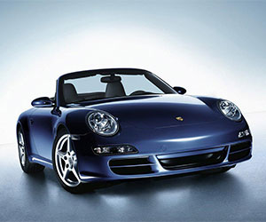
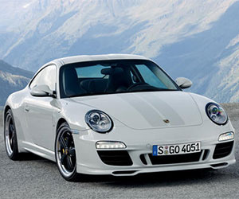

发展历史
保时捷公司的创始人费迪南德·保时捷（又译作费迪南德·波尔舍），在24岁时(1899年)已经发明了电动轮套马达，在第二年的巴黎国际展览会上，保时捷已经名扬四海。保时捷汽车具有鲜明的特色，甲壳虫式的车形，后置式发动机和优异的性能，令它很快成为知名的汽车。1963年法兰克福国际汽车展览会上，展示了保时捷911型，这个设计直到现在还有广泛的市场。它的车体设计者是费利，保时捷的大儿子，费迪南德·亚历山大·保时捷，保时捷带后齿轮箱底盘和V8发动机的928型，新技术959型，以及带电子调整的四轮驱动系统和无升力车身的911 Carrera 4型，是近几年来最重要的发展。极少有品牌能够如保时捷一样，像出售必需品一样出售奢侈品。在新款汽车保时捷911的广告中有这样一句广告词：“在一个充满多余和肤浅的时代，在一个充满轻浮与粗糙的年代，唯有保时捷911是真正的必需品，无可替代。
保时捷的历史可追溯至1900年，第一部以保时捷为名的汽车——Lohner-Porsche正式登场并造成轰动。这部双座跑车是由费迪南德·保时捷(Ferdinand Porsche,以下简称大保时捷)设计,当时才是二十五岁的大保时捷受聘于Lohner车厂担任设计师。在这里他已显示了出众的才能。
2018年12月18日，世界品牌实验室编制的《2018世界品牌500强》揭晓，保时捷排名第60位。 [1] 2019年10月，Interbrand发布的全球品牌百强榜排名50。

保时捷介绍